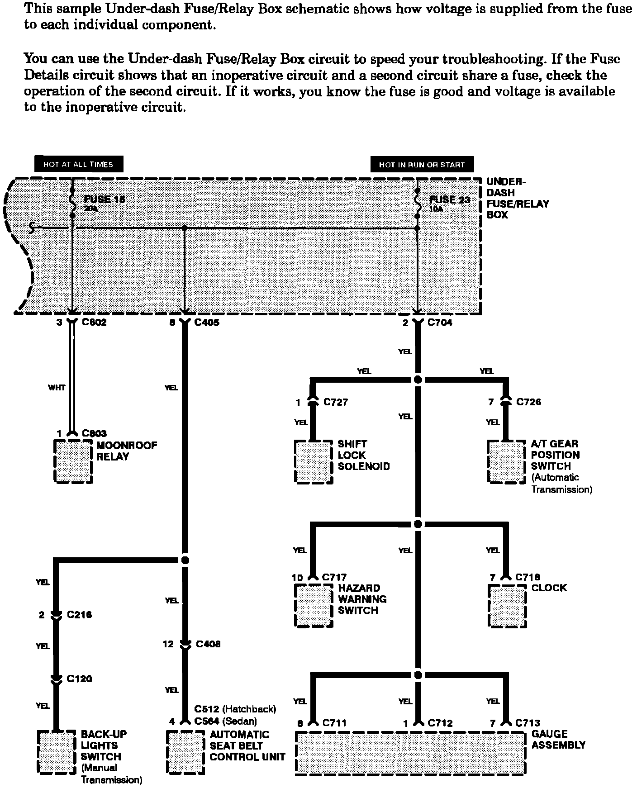

Operation CHARM
: Car repair manuals for everyone.
Home
>>
Acura
>>
1986
>>
Integra L4-1590cc 1.6L DOHC FI
>>
Repair and Diagnosis
>>
Transmission and Drivetrain
>>
Automatic Transmission/Transaxle
>>
Lamps and Indicators - A/T
>>
Shift Indicator - A/T
>>
Diagrams
>>
Diagram Information and Instructions
>>
Key to Electrical Diagrams
>>
Fuse Details Schematics
Fuse Details Schematics
Fuse Details Schematics:
